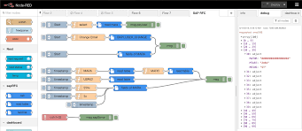
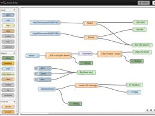

Progetto Ministeriale
Siamo un gruppo di ragazzi, iscritti al corso ICT1
che collaborano con altri team appartenenti ad altri corsi
al fine di realizzare un progetto utile e innovativo.
Download Our Site
L'evoluzione del nostro progetto:
In cosa consiste il progetto:
-
Definizione ruoli
bohhhhhhhhhhhhhhh
-
Utilizzo di Trello
Trello è un modo facile, gratuito, flessibile e visivo di gestire il nostro progetto e organizzare tutto.
Lo abbiamo scelto per la sua semplicità e per mantenere la nostra organizzazione Smart. -
Installare Node-Red
Node-RED è uno strumento nato con l’idea di gestire il mondo dell’ IoT tramite il paradigma dei flussi di dati, la sua base è JavaScript con il famosissimo Node.js il quale sfrutta tutte le sue potenzialitào
-
Shopify
Shopify è una piattaforma per il commercio elettronico, in cui gli utenti possono creare il proprio negozio online con il proprio URL.
-
Usare un server PLC
bohhhhhhhhhhhhhhhhhhhhhhh
-
Integrazione Node con un PLC
bohhhhhhhhhhhhhhhhh
-
Creazione di una Presentazione del progetto con HTML, CS e JS
questa
-
Lavorare insieme su GitHub
GitHub ci permette di monitorare le modifiche apportate ai file e cartelle del nostro progetto nel corso del tempo, conservando tutti i cambiamenti effettuati così che sia sempre possibile accedere alle diverse versioni del progetto stesso con la possibilità di ripristinare la struttura di una directory, tutto ciò in locale. Git permette a ciascun programmatore di lavorare e modificare il proprio repository indipendentemente dagli altri.
Full Stack JavaScript
We teach you Node-Red
We start con tutto siamo molto bravi e vi aiutiamo
Curriculum
-
NODE-RED

-
2 Front-End Programming
 -
3 Back-End Programming
